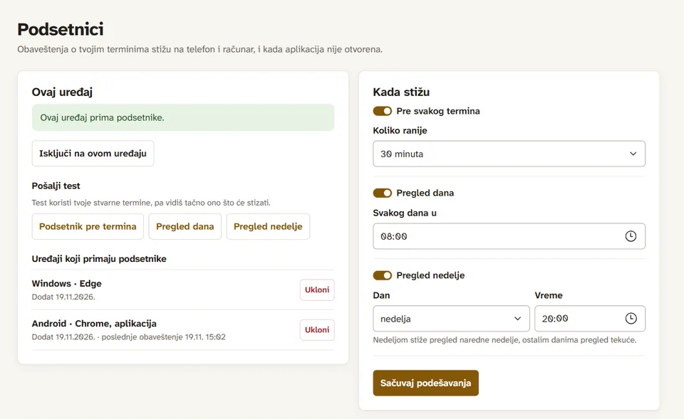

Product strategy
Problem, prioriteti i jasan plan.
Dostupan za nove projekte · Novi Sad
Web aplikacije za zakazivanje, klijente i naplatu, napravljene tačno za vaš način rada.
Studio
BARVIS je ime pod kojim samostalno radim u Novom Sadu. Lično vodim razgovor, projektujem tok rada i pišem kod, pa se ništa ne izgubi između ideje, dizajna i razvoja, a vi uvek znate s kim pričate.


Zajednički kalendar, karton klijenta i pregled ko koliko duguje, na jednom mestu.
Rešenje za fizioterapeute → Saloni, studiji, servisiZakazivanje bez preklapanja, istorija klijenta i jasan dnevni raspored.
Rešenje za salone i servise → Mali timovi i firmeInterni alat koji prati vaš stvarni proces: unos, odobrenja i izveštaji.
Opišite svoj proces →Ne prodajem samo ekran. Gradim logiku iza njega.
Problem, prioriteti i jasan plan.
Brzi tokovi, bez vizuelne buke.
Od baze podataka do aplikacije.





Gotov sistem.
Ne samo dizajn ili kod.
Napravljen oko vašeg procesa. Radi na računaru i telefonu.
Server, prenos postojećih podataka i rezervne kopije.
Kratka obuka i jednostavna uputstva za osoblje.
Ispravke, dorade i nove funkcije kako posao raste.
od 500 €
Moderan, brz sajt za firmu ili uslugu, prilagođen telefonu i spreman za Google.
od 2.000 €
Aplikacija kao Fizio Alfa: zakazivanje, klijenti, naplata, izveštaji, napravljena za vaš proces.
od 50 € / mesečno
Da sistem radi bez brige dok se vi bavite poslom.
Vaš budžet
Drugačija ideja ili ograničen budžet? Dogovorimo obim i cenu koja vam odgovara.
05 / Način rada
Najpre razumemo posao, pa tek onda pišemo kod.
Besplatan, 30 minuta: kako radite danas i gde gubite vreme.
Šta se pravi, kojim redom i u kom roku, pre nego što počnemo.
Razvoj u kratkim krugovima; posle svakog vidite radnu verziju.
Testiranje, obuka, puštanje u rad i stabilizacija.

06 / O meni
Student sam završne godine Računarstva i automatike na Fakultetu tehničkih nauka u Novom Sadu. Pravim softver koji bih i sam voleo da koristim: jasan, brz i napravljen oko stvarnog posla.
Sa svakim klijentom radim direktno, od prvog razgovora do puštanja u rad i podrške posle. Nema posrednika, nema izgubljenih informacija.
Sistem po meri kreće od oko 2.000 €, a sajt od 500 €. Tačan iznos zavisi od obima: koliko ekrana, korisnika i povezivanja sa drugim alatima treba. Posle besplatnog razgovora dobijate pisanu ponudu sa cenom i rokom, pre bilo kakve obaveze.
Prvu upotrebljivu verziju pravimo što pre, pa je dorađujemo uz vaše povratne informacije. Tačan rok stoji u ponudi.
Postojeći podaci se mogu preneti u novi sistem, da ne krećete od nule.
Sistem može da radi na vašem serveru ili u privatnoj mreži, dostupan samo vašem timu, uz redovne rezervne kopije. Pravi se u skladu sa Zakonom o zaštiti podataka o ličnosti, a na zahtev potpisujem ugovor o poverljivosti, što je posebno važno za zdravstvene podatke.
Da. Svaki sistem je od početka prilagođen i računaru i telefonu.
Tu sam za ispravke, dorade i nove funkcije. Dogovaramo podršku koja odgovara vašem tempu.
08 / Sledeći projekat
Pošaljite par rečenica. Gotov šablon poruke se otvara klikom, samo popunite:
Odgovaram lično, konkretnim sledećim korakom.